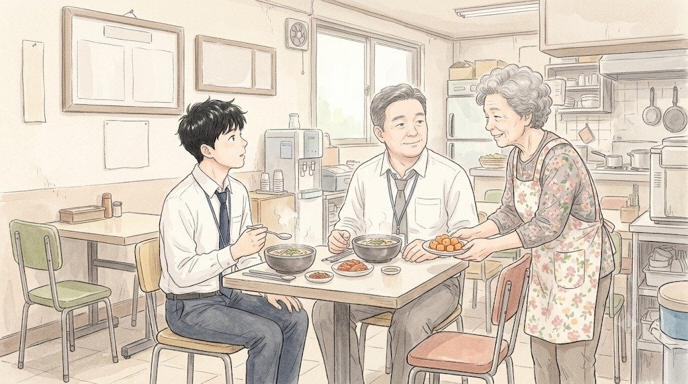
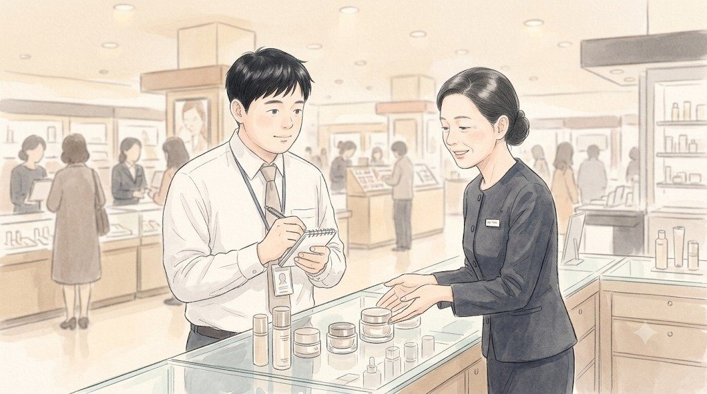
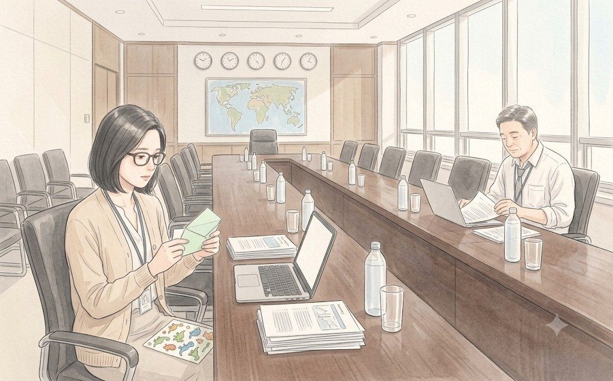

수요일 오후 6시 40분. 백승원의 책상.
이우진은 결재 서류를 올려놓으려다 손을 멈췄다. 책상 위에 수첩 한 권이 펼쳐져 있었다. 검은 가죽 표지, 손때가 반들반들했다. 백승원은 자리에 없었다. 화장실에 간 모양이었다.
보려고 본 건 아니었다. 펼쳐진 페이지가 하필 눈높이에 있었다.
'4/19 월 - 구소율 대리, 어머니 백내장 수술. 목요일 반차.'
'4/21 수 - 진하늘(IT), 첫 월급 받고 부모님 선물. 노 부장이 자랑함.'
'4/23 금 - 최윤아 과장, 서아 생일 4/28. 여섯 살. 공룡 좋아함.'
'4/24 토 - 탁민규(보안), 딸 올해 대학 입학(간호학과). 2학기 등록금 걱정.'
'4/26 월 - 이우진 과장, 4/3 발표 이후 말수 줄었음. 점심 한번.'
이우진은 마지막 줄에서 숨을 멈췄다. 자기 이름이었다.
"그거 보면 안 되는데."
뒤에서 목소리가 들렸다. 백승원이 손수건으로 손을 닦으며 서 있었다. 화난 얼굴이 아니었다. 들킨 아이 같은 얼굴이었다.
"죄송합니다. 서류 올려놓다가..."
"괜찮아. 어차피 너한테는 점심 사려고 했어."
백승원은 수첩을 덮어 서랍에 넣었다. 그리고 의자에 앉으며 웃었다.
"이번 주 금요일 어때. 「돌담집」 순댓국."
이우진은 대답하지 못했다. 서랍 속 수첩이 머릿속에서 떠나지 않았다. 구소율 대리의 어머니, IT의 막내, 보안팀 야간 근무자의 딸. 백승원의 부서 사람이 아닌 이름들이 더 많았다.
금요일 낮 12시 10분. 회사 뒤 순댓국집 「돌담집」.
12년 전 한지석이 권재혁을 처음 만났다는 그 집이었다. 테이블 여섯 개, 기름때 앉은 메뉴판. 주인 할머니 육순덕 씨는 백승원을 보자마자 "백 부장 왔네" 하며 깍두기를 한 접시 더 내왔다.

"부장님, 그 수첩. 언제부터 쓰셨어요?"
이우진이 먼저 물었다. 사흘 동안 참은 질문이었다.
백승원은 순댓국에 새우젓을 넣으며 잠깐 생각했다.
"2003년. 백화점 다닐 때."
"백화점이요?"
"응. 나 백화점 화장품 바이어였잖아. 그때 1층 화장품 매장에 판매사원들이 있었어. 각 브랜드에서 파견 나온 사람들. 하루 종일 서서 일하고, 점심은 창고에서 서서 먹고."
백승원은 숟가락을 내려놓았다.
"그중에 하경희 씨라는 분이 있었어. 국산 브랜드 매장 매니저. 쉰 살쯤. 나 신입 바이어 때 매장 동선, 고객 응대, 진열 각도까지 다 그분한테 배웠어. 바이어가 판매사원한테 배우는 거, 원래 이상한 거거든. 근데 그분은 아무렇지 않게 가르쳐 줬어."

"좋은 분이셨네요."
"응. 그분이 2003년 봄에 돌아가셨어. 매장에서 쓰러지셨대. 퇴근 직전에."
이우진은 숟가락을 멈췄다.
"장례식장에 갔어. 그런데 백화점 사람은 나 혼자였어. 바이어도, 매장 관리자도, 그 브랜드 본사 영업사원도 아무도 안 왔어. 다 바빴대. 연휘 매장 매니저 한 분이랑, 옆 매장 판매사원 둘. 그게 다였어."
백승원은 국물을 한 숟가락 떴다. 그리고 한참 삼키지 않았다.
"그분 남편이 나한테 그러시더라. 우리 집사람이 매일 백화점 얘기를 했는데, 회사 사람이 이렇게 없을 줄 몰랐다고. 그날 집에 와서 수첩을 샀어."
"그래서 적으시는 거예요? 다른 사람 일들을?"
"적어야 기억하니까. 나 머리 나빠. 안 적으면 까먹어. 누구 아이가 아픈지, 누구 부모님이 수술하는지. 까먹고 나면, 그 사람이 쓰러졌을 때 내가 장례식장에 안 가는 사람이 될까 봐."
이우진은 아무 말도 하지 못했다. 순댓국에서 김이 피어올랐다.
"근데 우진아."
"네."
"이거 비밀이다. 회사에서는 '인화'라고 하더라. 술 잘 마시고 사람 잘 챙긴다고. 그건 맞는데, 이 수첩이 없으면 나 아무것도 못 해. 그냥 까먹는 사람이야."
그는 웃었다. 이우진도 웃으려 했지만 잘 되지 않았다.
"부장님. 저는 왜 적으셨어요? 말수 줄었다고."
백승원이 숟가락을 내려놓았다.
"너 4월 3일 발표 이후로 회의록에 니 의견을 한 줄도 안 쓰더라. 원래는 맨 밑에 '담당자 메모'로 한두 줄씩 썼잖아."
이우진은 놀랐다. 그 습관을 아는 사람이 있을 줄 몰랐다.
"첫 문장에서 막힌 거, 아직 마음에 걸려?"
"...네."
"우진아. 나 처음 사장님 보고 때 넥타이 두 개 맸다고 했지?"
"네."
"그거 사실 거짓말이야."
이우진이 고개를 들었다. 백승원은 깍두기를 집으며 태연하게 말했다.
"두 개 맨 적 없어. 그날 너 너무 떨길래 지어낸 거야. 진짜는 더 창피했어. 나 첫 보고 때 사장님 앞에서 숫자를 거꾸로 읽었어. 매출 증가율 12%를 21%라고. 아무도 지적 안 하다가, 끝나고 재무팀장이 와서 그러더라. 백 차장, 21%면 우리 다 승진했겠네."
이우진은 웃음이 터졌다. 순댓국집 할머니가 돌아볼 만큼 크게.
"그러니까 첫 문장 막힌 건 아무것도 아니야. 다음 주부터 다시 담당자 메모 써. 나 그거 읽는 거 좋아해."
토요일 오전 6시 10분. 29층 대회의실.
이우진은 생수병을 정리하다가 멈췄다. 테이블 끝, 최윤아의 보조석 자리에 작은 봉투 하나가 놓여 있었다. 연두색 봉투. 겉에는 볼펜으로 '서아에게'라고 적혀 있었다. 백승원의 글씨였다.
안에는 공룡 스티커 한 장과 쪽지가 들어 있었다.
'서아야, 생일 축하해. 엄마가 토요일마다 회사에 오게 해서 미안해. - 엄마 회사 아저씨'
이우진은 봉투를 원래 자리에 그대로 두었다.
7시 5분 전. 최윤아가 들어왔다. 자리에 앉다가 봉투를 발견했다. 그녀는 봉투를 열고, 쪽지를 읽고, 한참 움직이지 않았다. 그리고 회의실 반대편 끝에 앉은 백승원을 봤다.

백승원은 출력본을 넘기고 있었다. 고개를 들지 않았다.
최윤아는 봉투를 조용히 가방에 넣었다. 그녀의 눈가가 조금 붉었지만, 7시 정각 문혜경이 들어올 때는 이미 평소의 얼굴이었다.
그날 회의록 맨 아래, 이우진은 3주 만에 담당자 메모를 한 줄 썼다.
'담당자 메모: 신흥 시장 예산은 숫자로 집행되지만, 그 숫자를 만드는 건 현장의 사람들입니다. 멕시코 카를로스 매니저에게 회신 필요.'
월요일 아침, 회의록이 돌아왔다. 백승원의 결재란 옆에 빨간 펜으로 짧은 글씨가 적혀 있었다.
'메모 좋다. 계속 써.'
이우진은 그 회의록을 출력해 자기 서랍에 넣었다. 그는 아직 수첩이 없었다. 하지만 오늘부터 무엇을 적어야 할지는 알 것 같았다.
(EP22 끝)